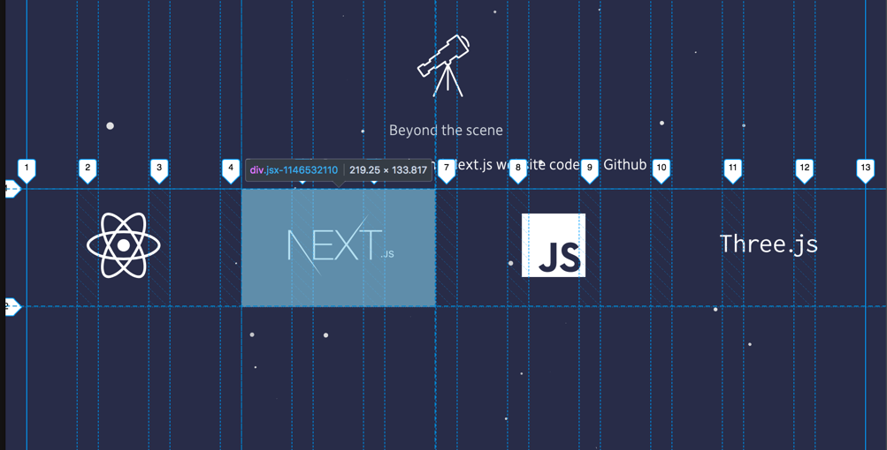

Warning: This project is currently at an early stage of development.
Share: /Next-React-Components
Another Planet Next.js React Components Version 1.0.0
Another Planet components for Next.js and React let you create attractive, reusable user interface elements allowing you to construct your experience with ease.
This components greatly simplify the task of creating clear, well-designed, responsive experiences.
This project is a collection of small components for Next.js.
All components are accessible, cross-browser compatible and support theme customization (SOON).
CSS-in-JS libraries let you write your styles in JavaScript. The Javascript inject a string of CSS in a style tag into the DOM.
Read Writing your styles in JS ≠ writing inline styles
CSS-in-JS abstracts the CSS model to the component level, rather than the document level (modularity).
No CSS dependencies
Server-Side Rendering ready
Use cool technologie like Next.js, React and styled-jsx
